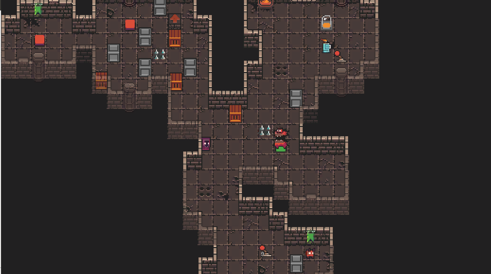

Red
Diseño e implementación, en desarrollo
Red es un videojuego estilo puzle - aventura en pleno desarrollo, el contenido que se muestra a continuación son algunas capturas de las iteraciones por las que va pasando el juego. Aunque ni de lejos está terminado, a día de hoy, el proyecto tiene ya una base sólida de mecánicas e interacciones.

